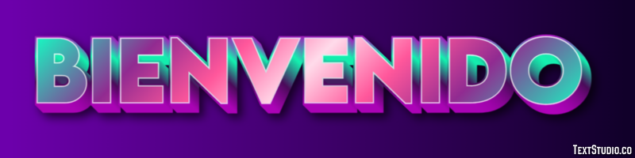

Este es un espacio personal donde comparto mis reflexiones, intereses y proyectos. Acompáñame en este viaje.

Aquí comparto mis opiniones sobre temas que me apasionan, desde tecnología hasta desarrollo personal.
Inteligencia Artificial (IA) y Automatización
La IA es una herramienta poderosa que debe manejarse con responsabilidad. Es fundamental fomentar la regulación, la transparencia y la educación en el uso de estas tecnologías para maximizar sus beneficios y minimizar sus riesgos. También debemos trabajar en la reconversión laboral para apoyar a quienes podrían ser desplazados por la automatización.
Cambio Climático y Sostenibilidad
La sostenibilidad no debe ser una opción, sino una prioridad. Necesitamos acelerar la transición a energías renovables, reducir el consumo excesivo y promover políticas más estrictas para proteger el medio ambiente. Como individuos, nuestras pequeñas acciones también marcan una gran diferencia.
Salud Mental en la Era Digital
Es importante equilibrar la vida digital con el bienestar personal. Deberíamos fomentar el uso saludable de las redes sociales y promover conversaciones abiertas sobre salud mental para romper los estigmas. Además, el acceso a servicios de salud mental debe ser más inclusivo y accesible.
Avances en Medicina y Biotecnología
Si bien estos avances son emocionantes, debemos abordar cuestiones éticas como el acceso equitativo y los posibles abusos. La biotecnología debe utilizarse para el bienestar colectivo y no solo para beneficio comercial.
Consejos y Recursos
Encuentra guías y herramientas útiles para tu día a día. Desde gestión del tiempo hasta recursos tecnológicos para mejorar tu productividad.
El video ofrece consejos prácticos para mejorar la organización del tiempo utilizando una lista de tareas y una agenda, enfatizando la necesidad de anotar todo lo importante para evitar olvidos. Se recomienda dedicar unos minutos diarios a revisar la agenda y planificar semanalmente, sugiriendo el uso de herramientas digitales para mayor eficiencia. La clave es comprometerse con las tareas agendadas y evitar sobrecargarse al principio para mejorar la productividad..